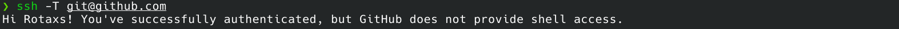
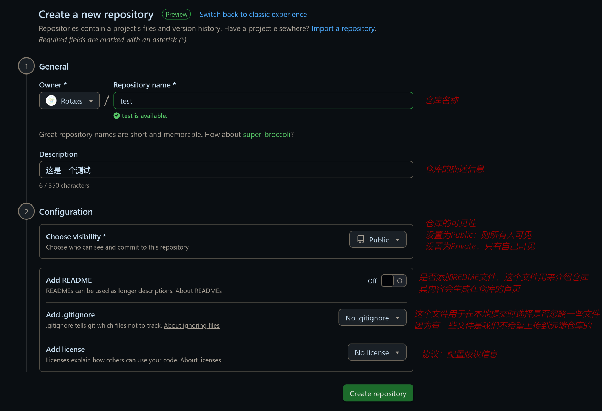
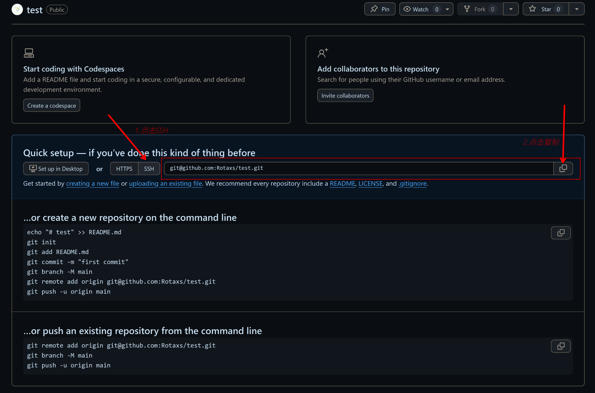
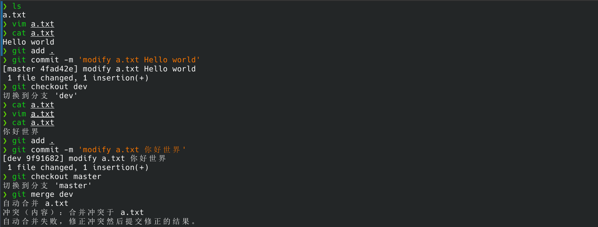
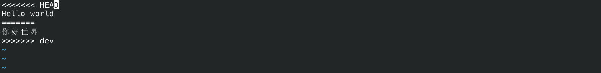
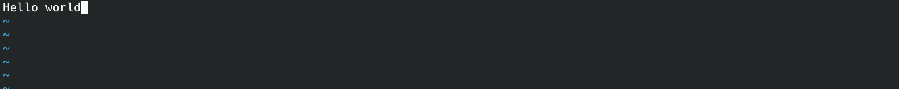
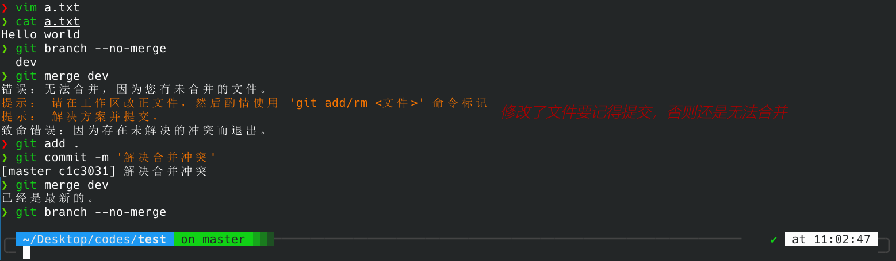
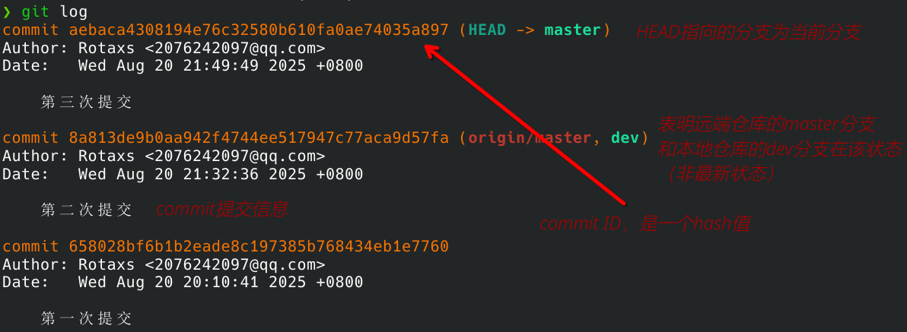

Git使用指南
Git 的安装
一般情况下 git 会作为其他包的依赖安装，所以一般不用主动安装
在 Arch Linux 上安装
直接用pacman安装即可
sudo pacman -S git在 Ubuntu 上安装
sudo apt install gitGit 的配置
Git 的三个配置文件
Git 自带一个
git config工具来控制 Git 的外观和行为
-
/etc/gitconfig文件：用sudo git config --system进行配置，针对整个系统 -
~/.gitconfig或~/.config/git/config文件：用git config --global配置，针对当前用户 -
.git/config文件：用git config --local配置，针对某一工作目录
每一个级别会覆盖上一级别的配置
配置用户信息和文本编辑器
用下面两条命令配置用户名和邮箱用户名和邮箱会在每次提交的同时提交
git config --global user.name "你的用户名"
git config --global user.email 你的邮箱用下面的命令配置文本编辑器，在每次 git 需要你输入信息时，就会打开这个文本编辑器（命令行模式下，当然还得是vim）
git config --global core.editor vim配置完成后，可以通过以下命令查看配置信息
git config --list当不记得某些变量在哪里配置的时候，可以通过下面的命令查找
git config --show-origin 变量名注：使用
git config --local(or global/system) -e会使用默认的编辑器打开相应的配置文件
获取帮助文档
首先要安装 man，直接用包管理器安装即可，这个包的名字是 manual 的简写，用于查看系统中自带的各种参考手册
-
通过
git help [verb]获取详细的帮助文档，如git help config -
通过
git [verb] -h获得简洁的帮助文档，如git config -h
配置远端仓库
配置 SSH 密钥
首先要生成本机 ssh 密钥
ssh-keygen -t rsa # 或者 ssh-keygen -t ed25519Linux 系统下，这会在 ~/.ssh 文件夹生成两个文件 id_rsa （私钥，不得分享）和 id_rsa.pub （公钥）
当我们使用 git push 等指令操作远程仓库时，远程仓库会使用我们设置的公钥加密一段信息返回给本机
本机使用私钥对这段信息进行解密，然后把结果发送给远程仓库
远程仓库用公钥去验证这段信息，如果验证成功，说明拥有该私钥的是你本人
我们将 id_rsa.pub 中的内容复制（注意这个是公钥，另一个需自己保留）
然后进入 github/gitee，打开 设置 -> SSH and GPG keys -> New SSH key
在该页面中，将内容粘贴到 Key 文本框中，标题在粘贴时会自动生成，一般不用更改，Key type 一般也不用更改
通过下面的命令可以验证 SSH 密钥是否配置成功
ssh -T git@github.com
ssh -T git@gitee.com出现下图的提示则说明添加成功

注意：若 ssh 命令不存在，可以手动下载
sudo pacman -S openssh
创建和连接远端仓库
在 Github/Gitee 创建一个仓库

然后复制其 ssh 链接

在本地创建一个文件夹，在这个文件夹打开终端，输入下面的指令
git init通过下面的命令添加远程仓库的代号
git remote add 远程仓库代号 远端仓库的ssh地址其中，远程仓库代号（一般使用 origin）并不一定要与 Github 的仓库名相同，他只是作为本地连接到远端仓库的标识
到这里，Git 的基本配置就结束了
Git 常用指令
仓库的简单（常用）操作
git init # 将当前目录设置为工作区（workplace），并在当前目录创建一个 .git 文件夹
git add . # 将工作区（workplace）所有文件都添加到暂存区（index/stage）
git commit -m '提交信息' # 将暂存区的文件提交到仓库（repository）
git push 远程仓库名 本地分支名:远端分支名 # 将本次仓库的文件推送到远端仓库工作区即本地目录，暂存区的文件都是被跟踪的文件，被跟踪的文件可以被提交到仓库，本地仓库的文件能被推送的远端仓库
提交信息能帮助我们快速地识别每次提交的内容，因此写提交信息需要有一定规范此外，使用下面的命令可以查看各个文件的状态（即被跟踪，已修改等）
git status该命令还可以加一个-s参数，以获取简短的信息
忽略文件 .gitignore
有时我们不希望所有的文件都被跟踪，比如日志文件，临时文件等这时我们可以在工作区目录下创建一个名 .gitignore 的文件，在里面写上要忽略的文件，这样在使用 git add 的时候就不会将这些文件或文件夹加入暂存区
文件
.gitignore的格式规范如下：
- 所有空行或者以 # 开头的行都会被 Git 忽略。
- 可以使用标准的 glob 模式 匹配，它会递归地应用在整个工作区中。
- 匹配模式可以以（/）开头防止递归。
- 匹配模式可以以（/）结尾指定目录。
- 要忽略指定模式以外的文件或目录，可以在模式前加上叹号（!）取反。
当然，我们一般不需要自己写这个文件，在 这里 我们能找到大部分语言或项目常用的.gitignore文件，找到并将其复制到自己项目的.gitignore文件即可
当我们忘记添加.gitignore文件却将一些不需要提交的文件提交时，可以用下面的命令删除
git rm --cache 文件名/目录名分支
在使用了 git init 后，git 会默认帮我们创建并转到 master 分支
分支允许我们在另一条“线”进行开发，而不会影响到“主线”，在分支完成开发后，还可以将分支和主线进行合并
例如现在有一个 main 分支，接下来在这个分支我们提交一个文件 a.txt，然后创建并转到 dev 分支，这时该分支也会有 a.txt
然后我们在 dev 分支提交一个文件 b.txt，再回到 main 分支，操作正确的情况下，这时的工作目录中没有 b.txt
而如果我们在 main 分支中，将 dev 合并到 main 分支，就能够看到文件 b.txt
分支的基本操作
想要创建新的分支，可以用如下指令
git branch <分支名>注意：只有在已经有文件提交的时候才能新建分支
如果想在新的分支进行操作，可以用下面的命令切换到新的分支
git checkout <分支名>实际上，使用下面的命令可以直接创建并切换到新的分支
git switch -c <分支名> # 新标准
# git checkout -b <分支名>使用下面的命令可以查看分支
git branch # 查看所有本地分支
git branch -r # 查看远端所有分支
git branch -a # 查看本地和远端所有分支
git branch -v # 显示每一个分支及其最后一次提交
git branch --merged # 查看与当前分支已经合并的分支
git branch --no-merged # 查看没有与当前分支合并的分支*表示的分支就是当前分支
使用下面的命令可以删除分支
git branch -d <分支名> # 安全删除分支（已经合并的分支可以安全删除）
git branch -D <分支名> # 强制删除分支注：删除分支时，要先切换到其他分支
使用下面的命令可以给分支重命名
## -m 表示 move
git branch -m <原分支名> <新分支名>合并分支
使用下面的命令可以将目标分支合并到当前分支
git merge <目标分支>如在 dev 分支中有几个新文件，将其合并到 master 后，这几个新文件也会出现在 master 分支中
然而，在协作开发的过程中，常常会有合并冲突的情况
例如，在 master 分支中有一个文件 a.txt，dev 分支也有一个文件 a.txt
现在分别对里面的内容进行修改，然后尝试将 dev 合并到 master

这里会发现合并失败，这是因为自动合并时 git 不知道该选择哪个分支的内容，因此需要我们手动修改
我们在 master 分支中打开 a.txt，里面会变成这样

然后对其修改，保留我们要留下的东西即可，如下

然后进行合并即可

远程仓库的使用
远端仓库的增删改查
使用下面的命令连接（添加）远端仓库
git remote add <远程仓库代号> <远端仓库地址>使用下面的命令删除与远端仓库的连接
git remote remove <远程仓库代号>使用下面的命令修改远程仓库代号
git remote rename <原来的名称> <新的名称>使用下面的命令列出连接的远端仓库的信息
git remote # 显示所有远程仓库代号
git remote -v # 显示所有远程仓库代号和其地址
git remote show <远程仓库代号> # 显示远端仓库的详细信息推送和拉取
使用下面的命令可以将本地仓库推送到远端仓库
git push <远程仓库代号> <本地分支名>[:远端分支名]使用下面的命令可以将远端仓库的更新全部拉取回本地
## 将远程仓库所有分支的更新拉取到本地
git fetch <远程仓库代号>
## 将远程仓库某个分支拉取到本地
git fetch <远程仓库代号> <分支名>将更新拉取到本地后，可以通过 git branch -a 或 git branch -r 查看
然后我们可以手动将远端仓库和本地仓库进行合并，如将 origin/master 和当前分支合并
git merge orgin/master想要免去合并的步骤，可以使用 git pull，这个操作相当于拉取+合并
git pull <远程仓库代号> <远程分支名>[:本地分支名]例如，将远端的origin/master分支和本地的dev分支合并，可以这样写
git pull origin master:dev也可以先切换到dev分支再合并（到当前分支），如下
git checkout dev
git pull origin master当然，既然涉及到 merge，就可能会出现合并冲突，按照前面所讲的方式解决即可
同时，在多人协作过程中，我们在每次推送前，都应该先 pull一下，手动解决可能存在的冲突
克隆
利用下面的指令可以从远端克隆一个仓库
git clone <https或ssh地址> # 直接克隆
git clone 地址 new_name # 克隆并重命名
git clone -o <远程仓库代号> <地址> # 默认远端仓库代号是 origin，用该命令可以修改代号输出日志
使用下面的命令可以输出提交日志
git log
以下是可选的一些参数
-
--all显示所有分支 -
-n要显示日志的数量 -
--abbrev-commit使得输出的 commit id 更简短 -
--oneline将提交信息显示为一行（默认会添加--abbrev-commit参数） -
--pretty=oneline将提交信息显示为一行（默认不会添加--abbrev-commit参数）short,full,fuller显示信息的详尽程度
-
--graph以图的形式显示 -
--stat输出对更改内容的统计 -
--patch输出更改的内容 -
--no-merges隐藏合并（merge）提交 -
日志按日期筛选
--before='xxxx-xx-xx'输出某日期（包含）之前的日志--after='xxxx-xx-xx'输入某日期（不包含）之后的日志- 日期还可以输入
today，yesterday，30 days ago，1 week ago等
-
--author=用户名/邮箱通过用户筛选日志 -
--grep=提交信息按提交信息筛选日志
如果日志过长，会在在终端最下方出现
:，表示日志未显示完全这时按下回车键或方向下键能继续显示日志，按q退出日志
撤销操作
“修补”提交
使用下面的命令可以将该次提交并入到上一次提交
git commit --amend比如
git commit -m '第一次提交'
git add 少提交的文件
git commit --amend这样 少提交的文件 和 第一次提交的文件 就会共用一次提交
回滚版本
当我们想回到先前的版本时，我们可以用如下命令
git reset --hard <commit id>其中，commit id 可以是完整的 hash 值，也可以是简写的 hash 值（用 git log --oneline 等指令可以查看）
注意：回滚版本会修改目录的文件，回滚前一定要注意别让重要的文件丢失
回滚后，最新的几次提交就无法使用 git log 查看，如果想恢复到回滚之前的版本，可以用下面的命令查看最新几次提交的 commit id，然后用 git reset 即可
git reflog打标签
git 中的两种标签
给某一个版本打标签表示该版本是个值得重视的版本，标签如 v1.0 v0.0 可以用来表示产品的版本号码
Git 支持两种标签：轻量标签（lightweight）与附注标签（annotated）
简单地说，附注标签可以给标签添加注释信息，而轻量标签不能
给版本添加标签
使用下面的命令打标签
git tag -a <标签名> -m <'注释信息'> # 为当前版本创建附注标签
git tag <标签名> # 为当前版本创建轻量标签
git tag -a <标签名> -m <'注释信息'> <commit id> # 给某一个 commit 打标签使用下面的命令可以查看标签
git tags # 列出所有标签
git show <标签名> # 显示某个标签的详细信息
git tag -l '正则' # 通过正则表达式筛选标签将标签推送到远程仓库
使用下面的命令可以直接推送所有的标签
git push <远程仓库代号> --tags使用下面的命令可以推送某一个标签
git push <远程仓库代号> <标签名>删除标签
使用下面的命令可以删除本地标签
git tag -d <标签名>使用下面的命令可以删除远程仓库的标签
git push <远程仓库代号> -d <标签名>其他可能用得到的指令
-
git diff比较文件差异，主要用于查看哪些更新没暂存，哪些已经暂存但没有提交 -
git diff --staged查看已暂存但是未提交的文件差异 -
git commit -a把所有已经被跟踪的文件暂存并一起提交 -
git rm <file>删除文件并删除其在暂存区的信息 -
git mv <file>移动文件并修改其在暂存区的信息 -
git log --pretty=format:""格式化 log 输出，详情看 这里
一些问题的解决方法
使用 git branch 等指令会打开默认编辑器
关闭分页器即可
git config --global core.pager ""